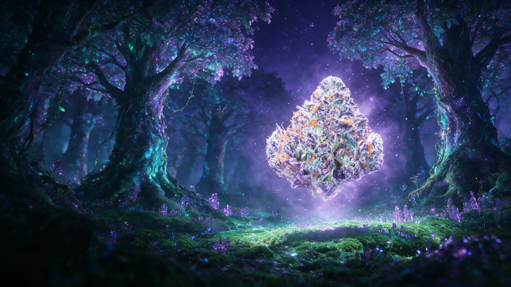
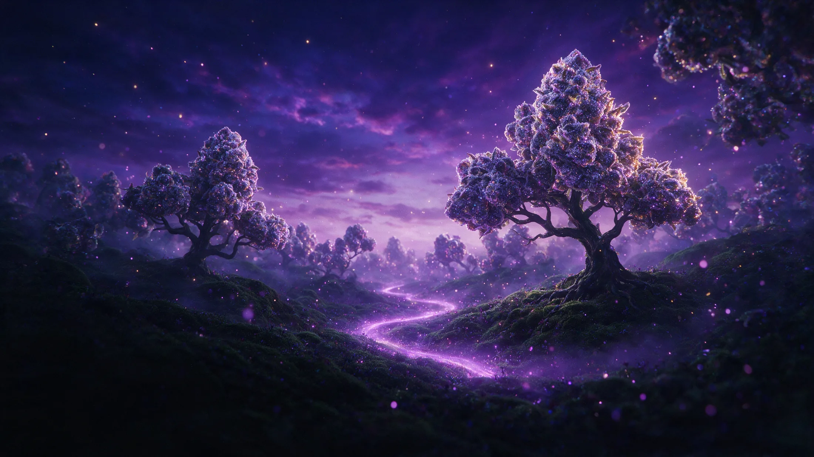
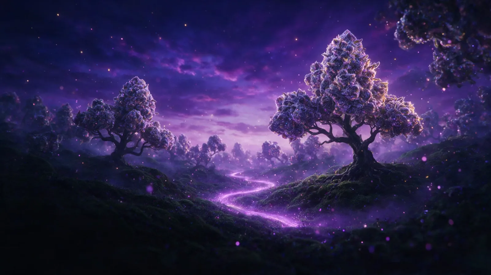
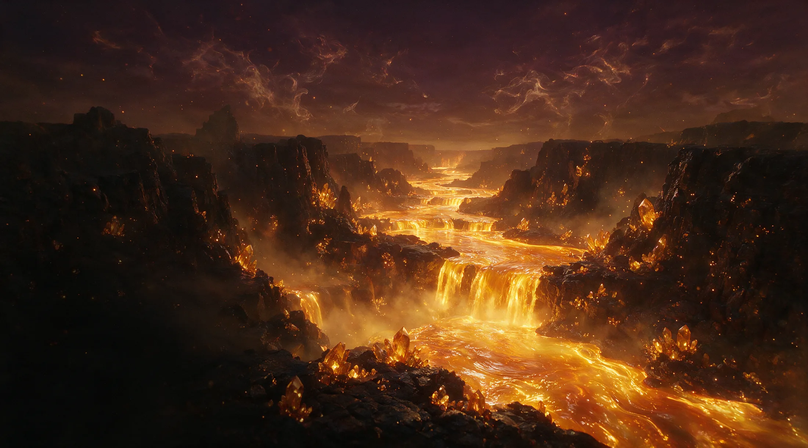
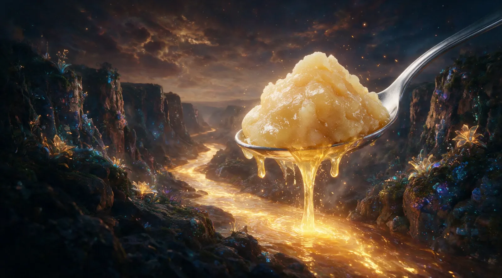
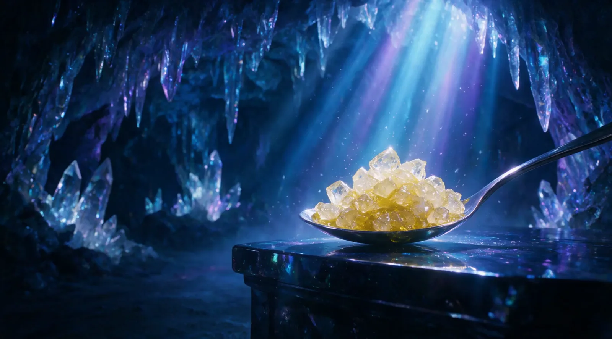
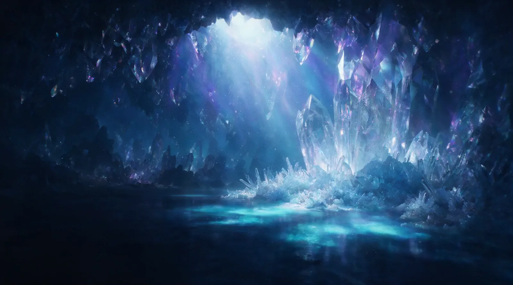
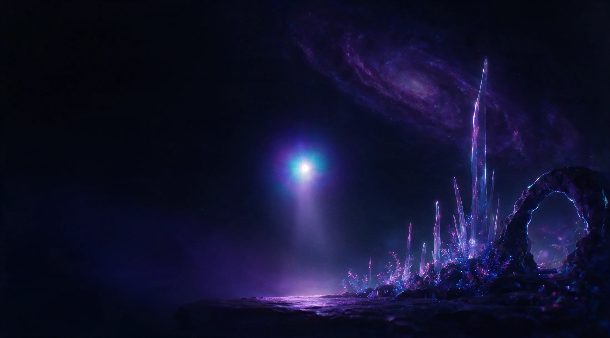
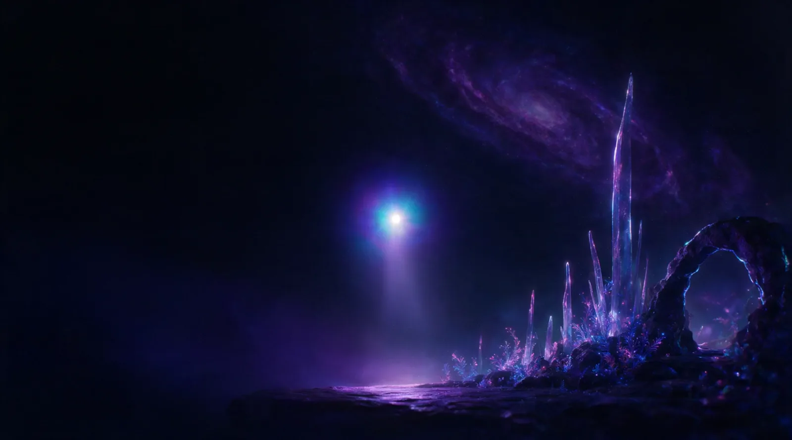
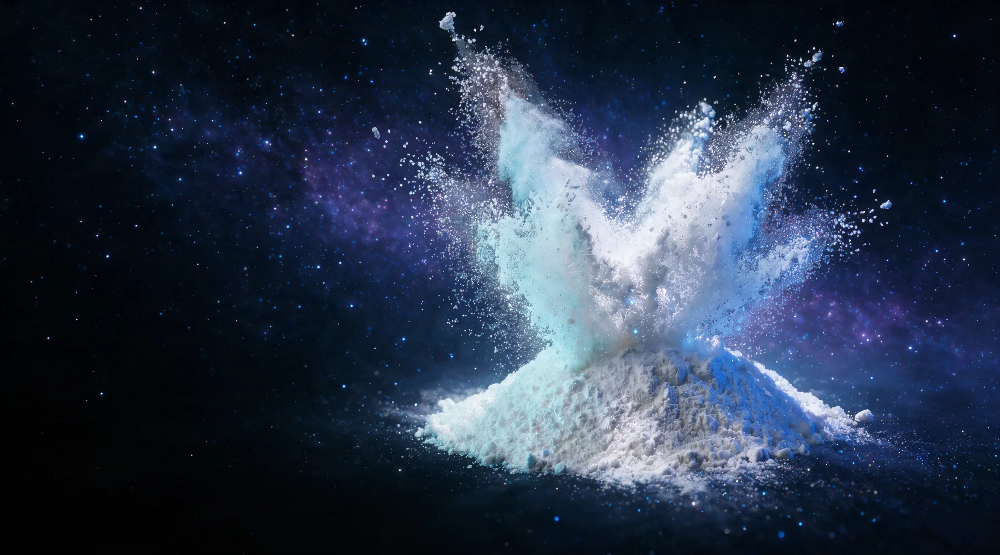
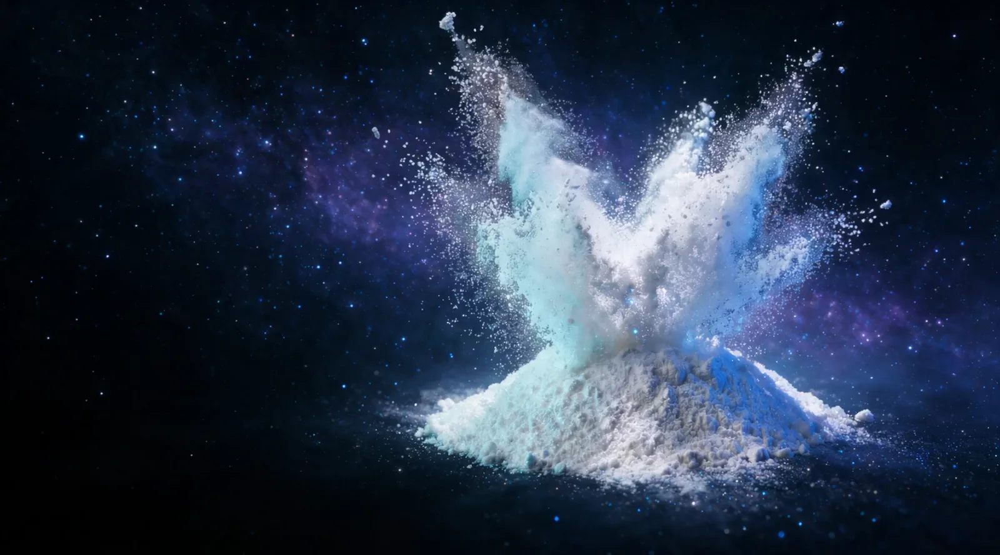
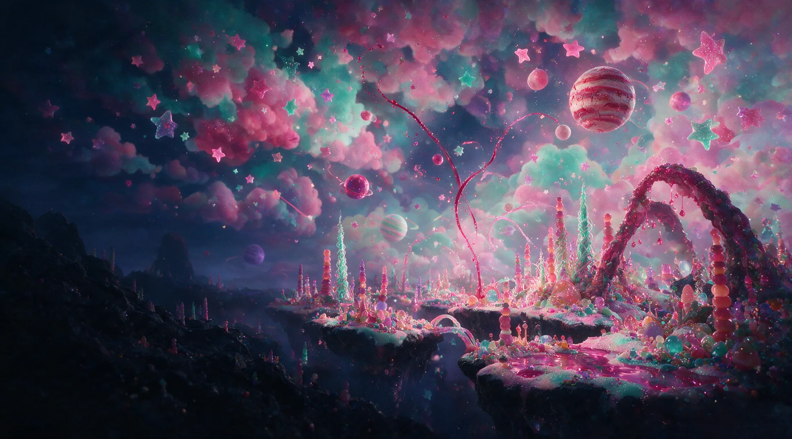
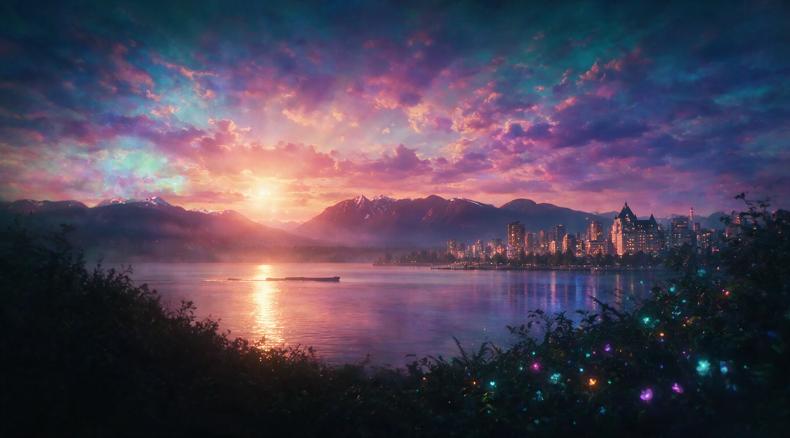
Six worlds, grown in British Columbia. VanCity Labs keeps the lights on all night. Scroll, and don't wake up yet.
The Grove
Frumpz smalls and hand-rolled cones, cured slow under a purple sky.
Live rosin, pressed cold from fresh-frozen flower. The terpenes ride the current whole.
THCA diamonds grown in glass, stacked on the altar where the light lands.
THCA isolate, milled fine as mountain snow. The cleanest thing in the dream.
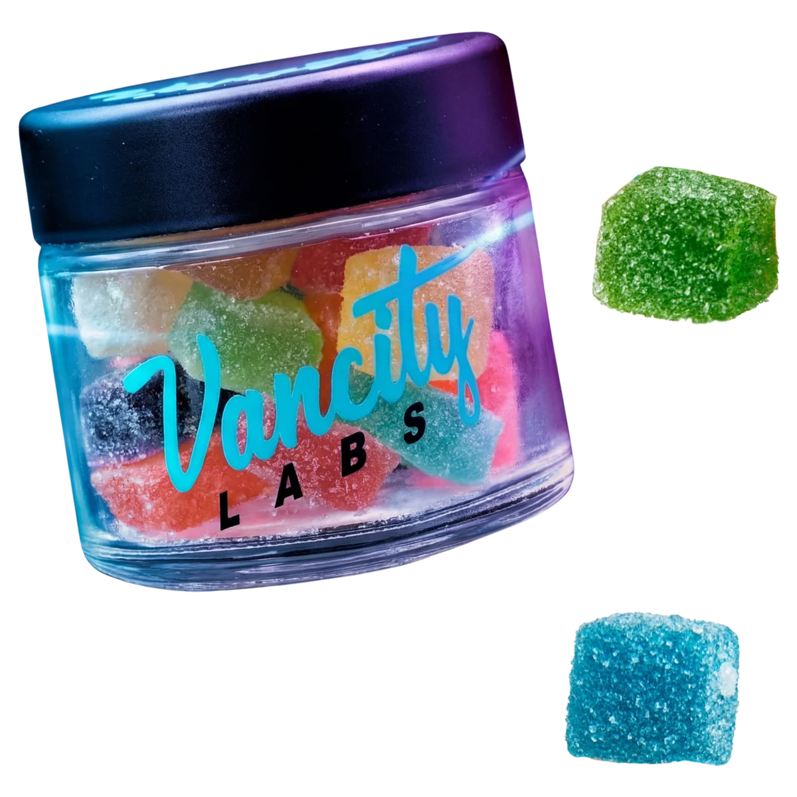
Sugared stars in a sealed jar.
Shop ediblesCannalean, 1000 mg a bottle.
Shop cannalean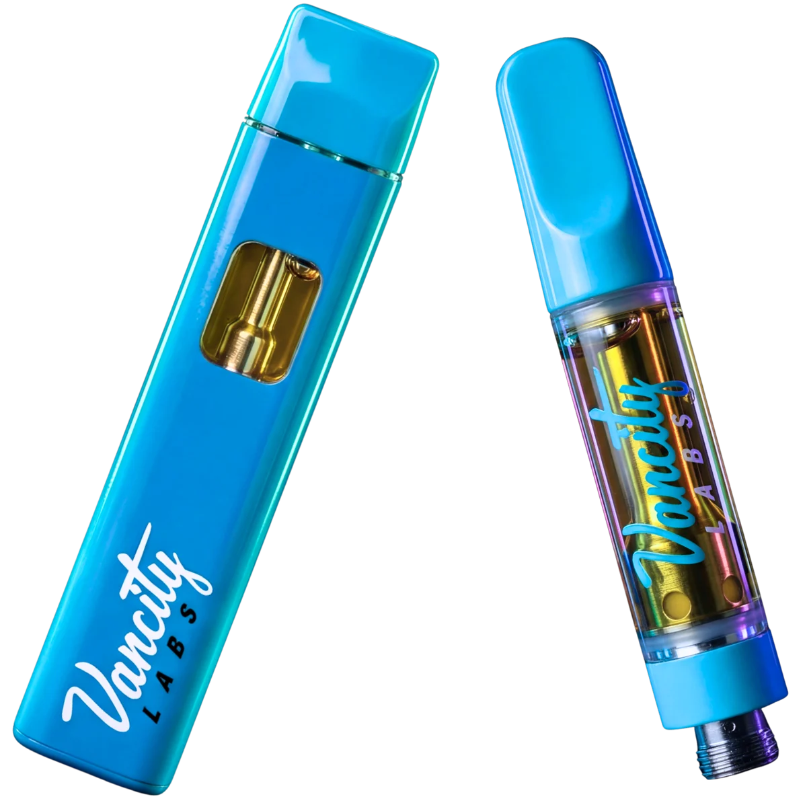
A light that never burns out.
Shop vapes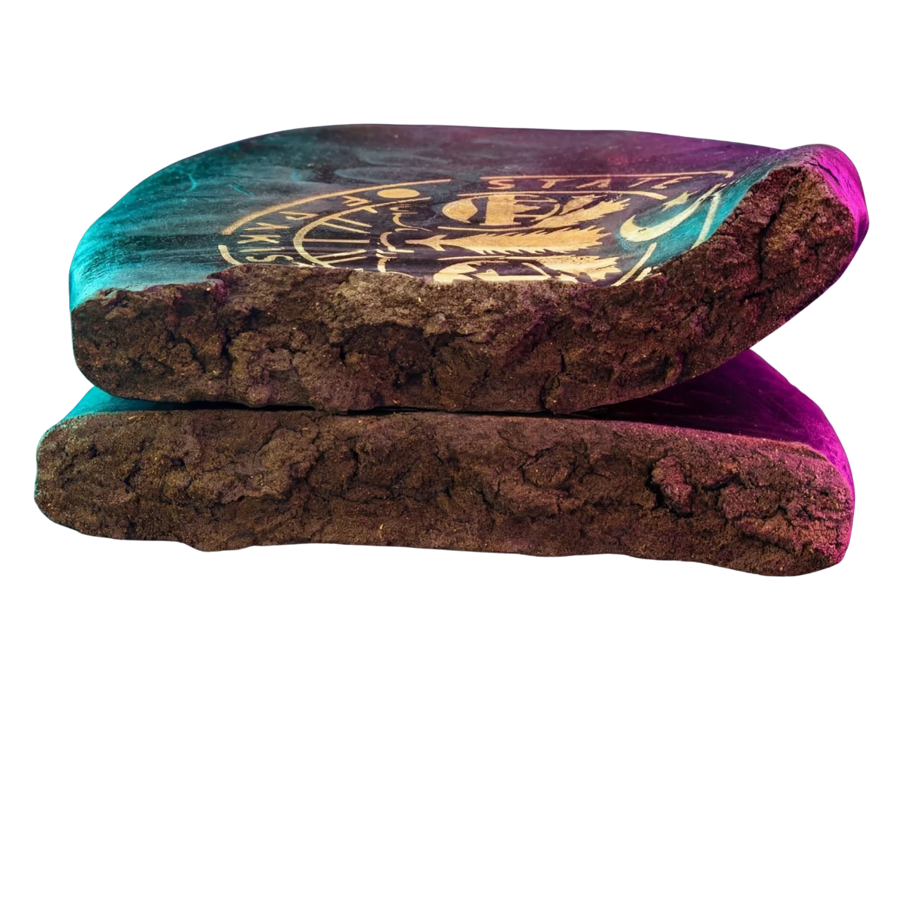
Pressed the way the old roads remember.
Shop hashishBundles for the long night.
Shop bundlesThis month's orbit of discounts.
See the dealsEverything you flew through is on the shelf tonight, grown in BC and shipped across Canada.
VanCity Labs · Vancouver, BC · 19+ only. This was a dream. The shop is real.